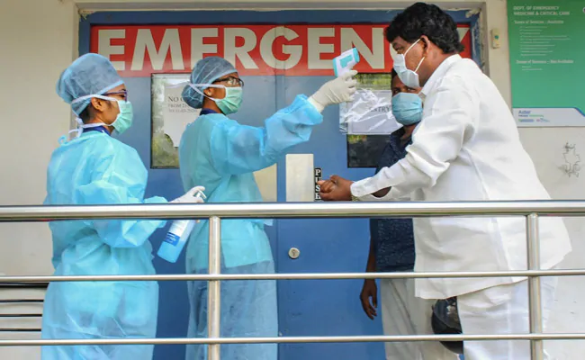

 Indore:
A senior doctor in Indore today died because of the coronavirus infection, taking the total of deaths in Madhya Pradesh's commercial capital to 27. The former health department doctor, 65, had no travel or contact history, implying that he may have contracted the virus from a patient.
"The deceased (Omprakash Chauhan) was formerly the District Ayush Officer in Dhar district. He lived in Indore's Brahmadev Colony and was admitted at a private hospital a week back, but was shifted to SAIMS Hospital two days back, after testing positive for the COVID-19," Chief Medical Officer Dr Pravin Jadia said in a statement.This came a day after a doctor, 62, died in the city. Dr Shatrughan Panjwani, a general physician, was tested positive for coronavirus earlier this week, a government hospital report said. Soon after, he had released a video denying the report.Mr Jadia had said on Thursday he may have come in contact with a COVID-19 patient during treatment."We are trying to trace the source of infection," he had said.Madhya Pradesh has so far reported 453 patients, with 14 fresh cases being reported in Bhopal on Friday. Indore, which has emerged as the epicentre of the deadly disease in the state, has 235 cases.
Nearly 900 new novel coronavirus cases and 37 deaths have been reported in the country over the past 24 hours, the Health Ministry said this evening in its daily briefing. This is the largest ever single-day spike in the number of cases and deaths, the ministry added, and takes the total number of COVID-19 cases in India to 6,761 with at least 206 deaths linked to the virus.
Prime Minister Narendra Modi, who last month announced a three-week lockdown till April 14, said this week it may be extended. The final decision will be taken after consulting the states, he reportedly said
at an all-party meeting